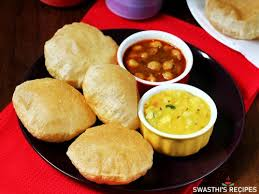

TIFFINS MENU
IDLI

Idli is a type of savoury rice cake, originating from South India, popular as a breakfast food in Southern India.
RS,80
PURI

uri, also poori, is a type of deep-fried bread, made from unleavened whole-wheat flour, originated from the Indian subcontinent.
RS,60